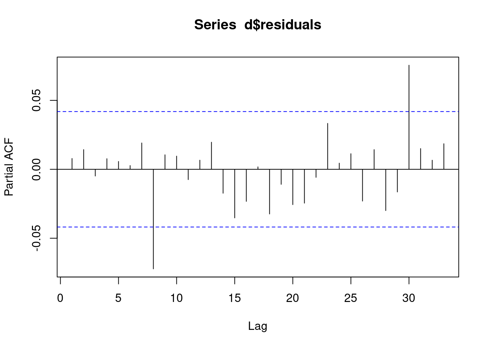
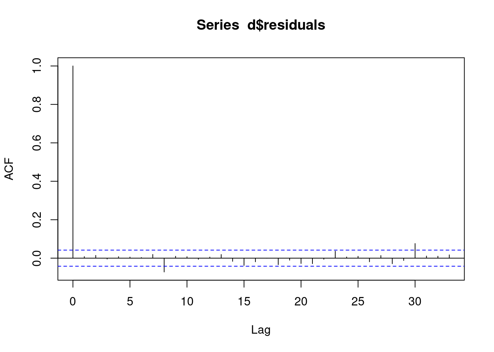

library(data.table)
d <- fread("data/exercise_1.csv")
fit0 <- glm(y ~ yearMinus2000 + numberOfCows, data=d, family=poisson())
fit1 <- glm(y ~ season + yearMinus2000 + numberOfCows, data=d, family=poisson())
print(lmtest::lrtest(fit0, fit1))Likelihood ratio test
Model 1: y ~ yearMinus2000 + numberOfCows
Model 2: y ~ season + yearMinus2000 + numberOfCows
#Df LogLik Df Chisq Pr(>Chisq)
1 3 -104814
2 6 -7847 3 193933 < 2.2e-16 ***
---
Signif. codes: 0 '***' 0.001 '**' 0.01 '*' 0.05 '.' 0.1 ' ' 1summary(fit1)
Call:
glm(formula = y ~ season + yearMinus2000 + numberOfCows, family = poisson(),
data = d)
Deviance Residuals:
Min 1Q Median 3Q Max
-3.5547 -0.6743 -0.0203 0.6393 3.2527
Coefficients:
Estimate Std. Error z value Pr(>|z|)
(Intercept) 0.0998769 0.0168980 5.911 3.41e-09 ***
seasonSpring 0.9996116 0.0077048 129.739 < 2e-16 ***
seasonSummer 2.0061609 0.0070148 285.990 < 2e-16 ***
seasonWinter -0.0048955 0.0093124 -0.526 0.599
yearMinus2000 0.2001843 0.0011420 175.298 < 2e-16 ***
numberOfCows 0.1987005 0.0007667 259.153 < 2e-16 ***
---
Signif. codes: 0 '***' 0.001 '**' 0.01 '*' 0.05 '.' 0.1 ' ' 1
(Dispersion parameter for poisson family taken to be 1)
Null deviance: 296600.3 on 2190 degrees of freedom
Residual deviance: 2167.4 on 2185 degrees of freedom
AIC: 15707
Number of Fisher Scoring iterations: 4d[,residuals:=residuals(fit1, type = "response")]
pacf(d$residuals)
acf(d$residuals)